lesson 1:
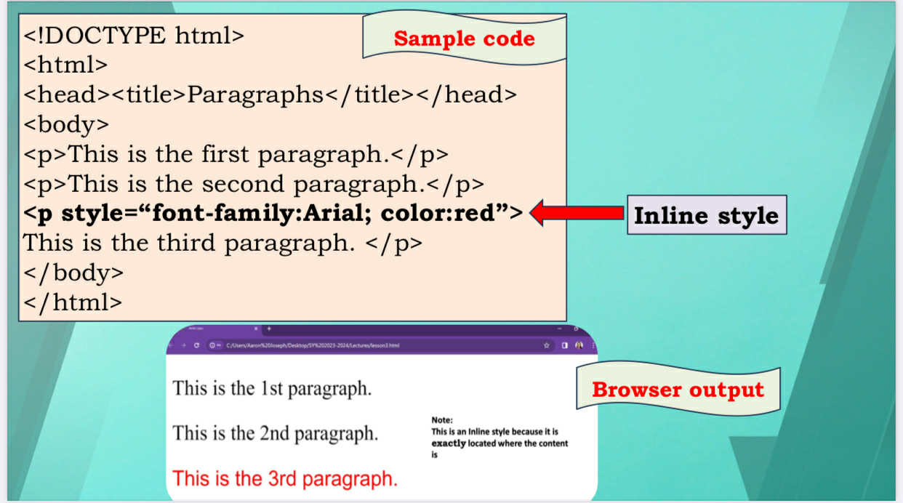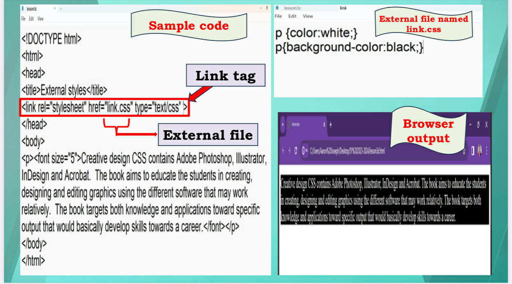css
-cascading style sheet
-used to design web pages
layers of a webpage
content layer
-the content layer is the underlying code of a page
-defines and layout the text, images, animation, sound, video and everything you want to put in a web page with the use of tags
presentation layer
-where you can define how people see your web page in a browser
-this includes the ability of the webpage to work and its appearance to the users.
behavior layer
where you have a real-time useinteraction with the web page. The interaction may be simple validation of input or filling out a form or even abig as web-based programs.
this includes the functionality of the elements in your webpage
In lesson 1, I learned about css and its purpose and benefits; css is used for designing webpages and making it look good. I also learned bout all layes of a webpage and their function in awebpage; the content layer includes the texts, image, videos, audio etc., the presentstion layer is how the users see the webpage, while the beahavior layer is the interaction between the users and your webpage, such as filling out the forms.
lesson 2:
In lesson 2, I learned about the structure of CSS and the three kinds of stylesheets; The external stylesheet is the most global one and it can affect all the pages, the embedded stylesheet is document-wide and can affect one page, while internal stylesheet override external and embedded, it is used for isolated changes to headers, paragraphs and other elements.
lesson 3:
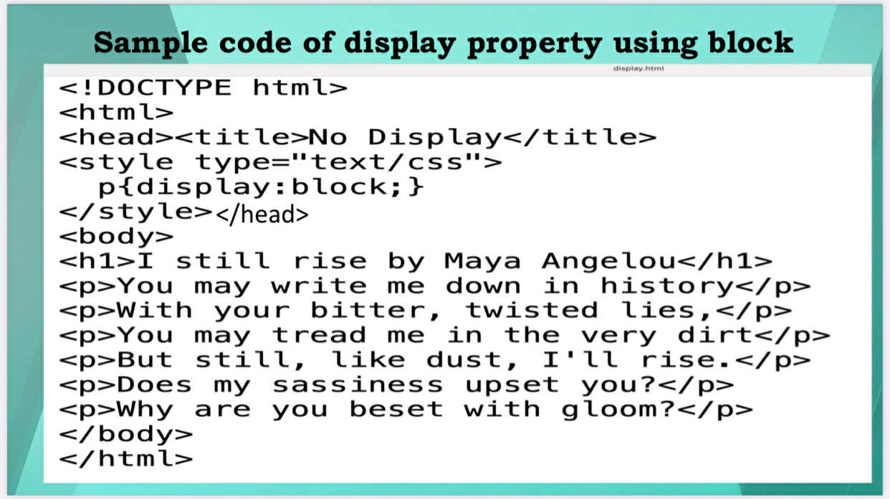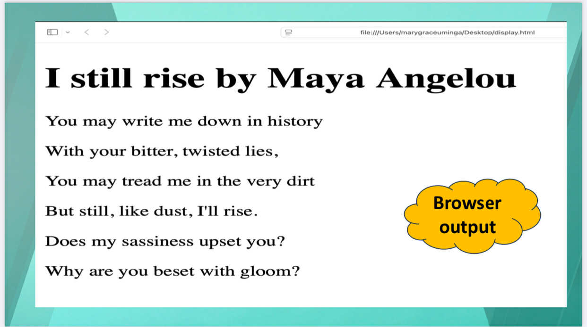In lesson 3, I learned about display properties; the block-level displays text vertically, while the inline-level displays text horizontally. I also learned about div and span tag and its attribute 'class'; the div tag is used for adding styles for block-level elements like paragraphs, while the span tag is used for adding styles to inline-level elements. The class attribute indicates the style to be applied.
lesson 4:
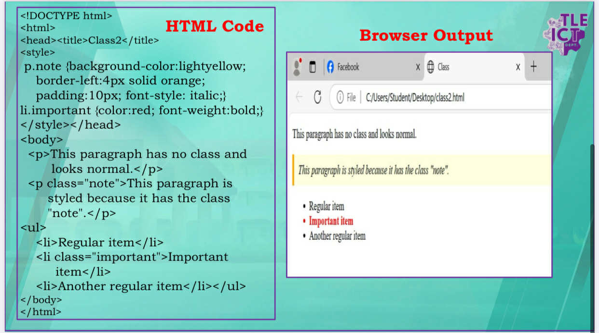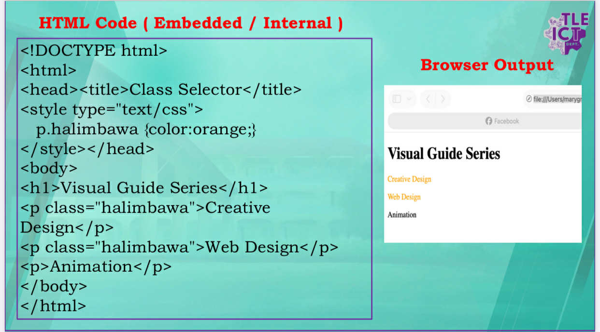In lesson 4, I learned about classes; classes are used for formatting texts and it allows you to apply the same style to many html elements. Classes can be used for different elements and you can use more than one class to an element. I also learned that you can have classes for a specific element like p.classname, it can only be used for paragraphs.
lesson 5:
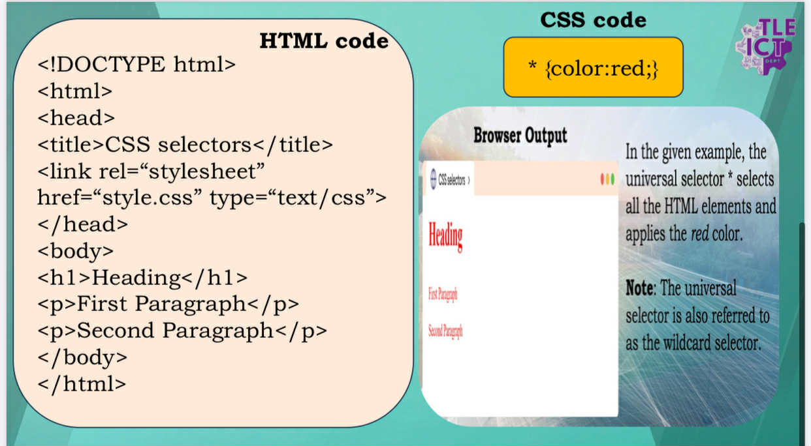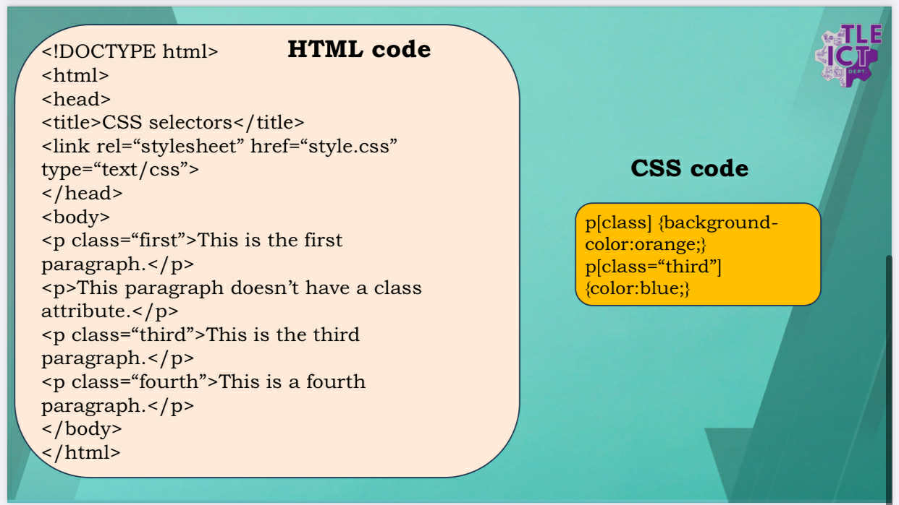In lesson 5, I learned about css selectors; selectors are used in external stylesheets, they have an external file. Selectors have 6 types; Class selectors, Element selector or Tag selector, ID selector, Universal selector, Group selector and Attribute selector. CSS selectors are used to “find” or “select” the HTML elements that you want to style.
lesson 6:
In lesson 6, I learned about dimensions; dimension are used to manage visibility, height and width of different HTML elements. There are also Pseudo-classes arent user-defined and are used for specific HTML elements only. Example is the anchor element which has four pseudo-classes; the Link, Hover, Visited and Active which have a specific order which is LVHA.
Buwan ng wika:
The most important thing I learned during the Buwan ng wika is to appreciate your language and culture, and how important it is to share your culture with others. I can apply what I learned by sharing my culture as a bisaya to my friends, by speaking bisaya at home with my family, and by respecting other's culture and language. I think I participated actively because I wore Filipiniana every week to school. I would explain this event as something very empowering because as a Filipino, it sparks nationality inside me, especially with the political problems we are currently experiencing. Its important to have this event because by doing this, we can teach the youth to love their country and origin.
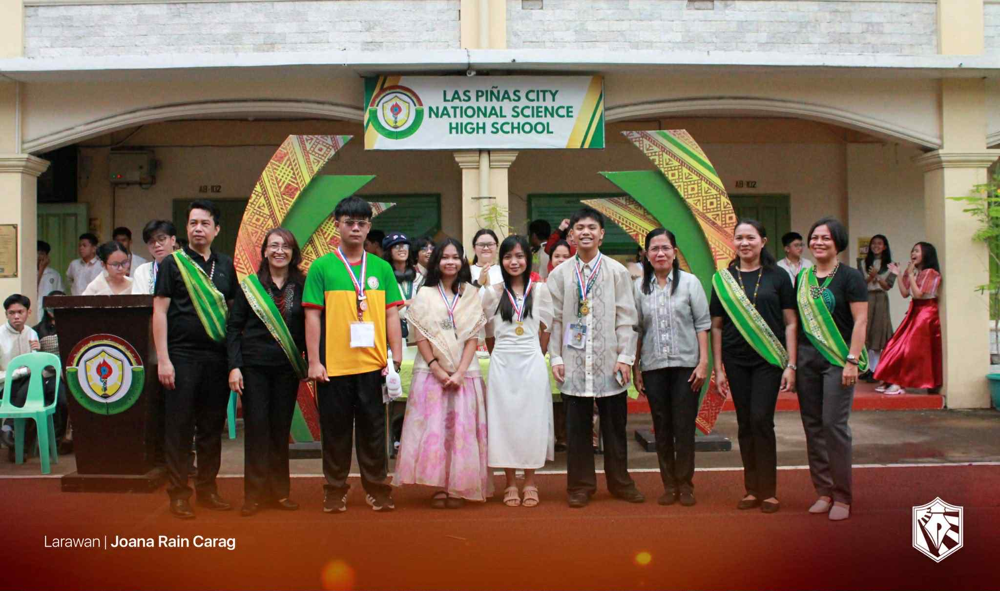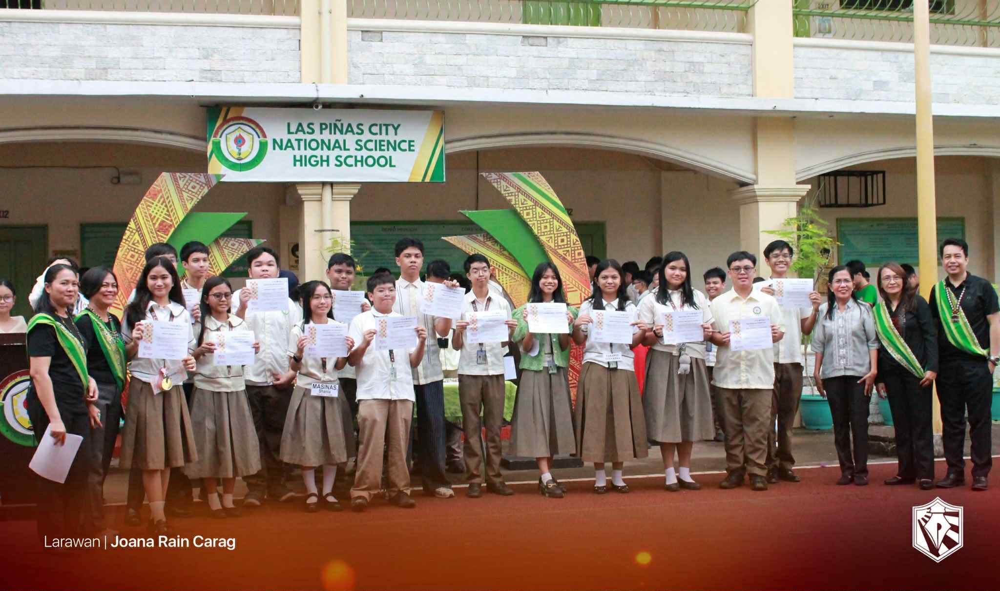Intrams:
The most important thing I learned during the intramurals is teamwork, sportmanship and cooperation, because despite being divided into groups, the sportmanship still remains. I can apply what I learned by being cooperative during groupworks in school and work with each other as one. I participated actively because i joined my team's girls volleyball, even though i didnt get to play, I also joined the 4 x 100, and cheered for my teammates. I would explain this event as something very fun and something i enjoyed very much. Its important to have this event because it shows that Lpsci students are not only academically smart and it also teaches sportmanship to every one.
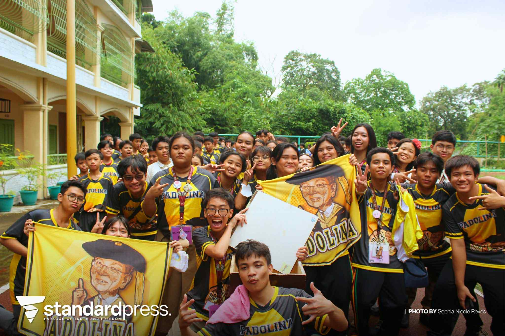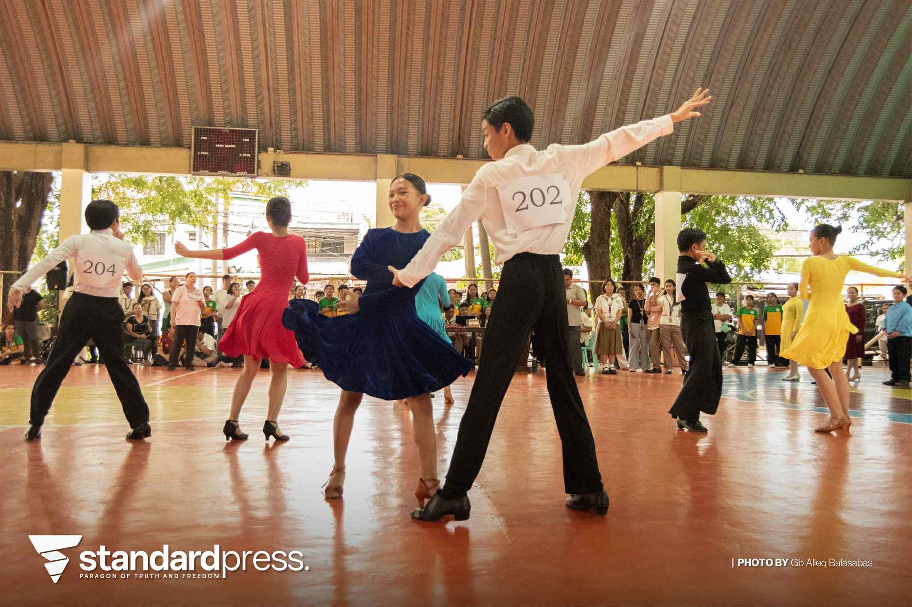Science month:
The most important thing I learned during the science month is to always show stewardship for the environment and to protect our environment. I can apply what I learned by bwing observant with my surroundings, by being mindful with my trash and by cleaning my surroundings. I participated actively because I helped with creating our WINS corner and I also participated in the miniature paradise with my classmate Miguel. I would explain this event as something thats is very knowledgable, because science is very important to us. Its important to have this event because it teahces us to protect and care for our environment and students are able to showcase their creativity.
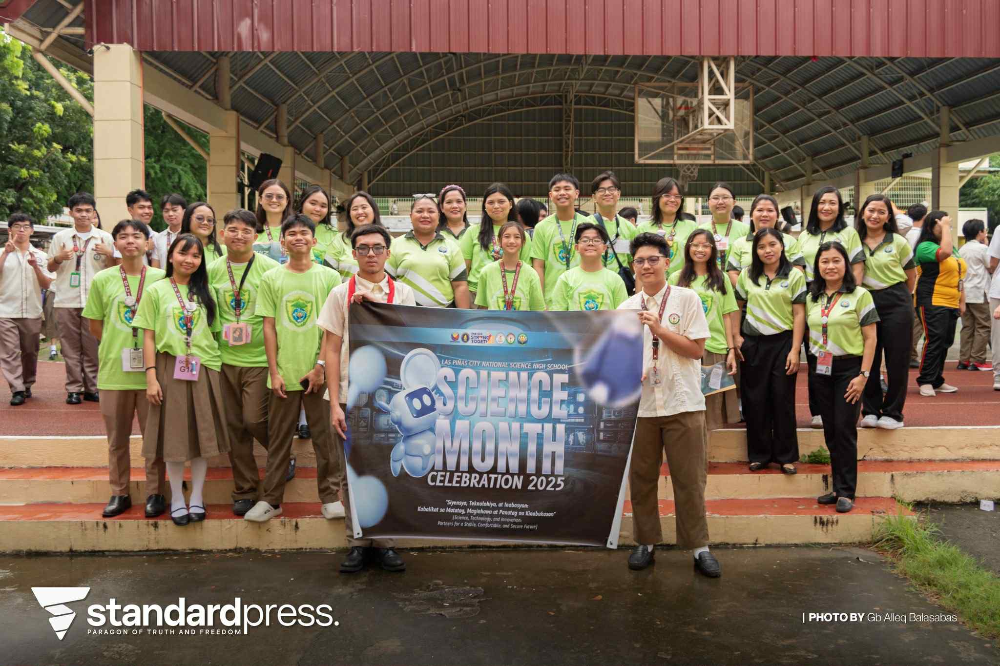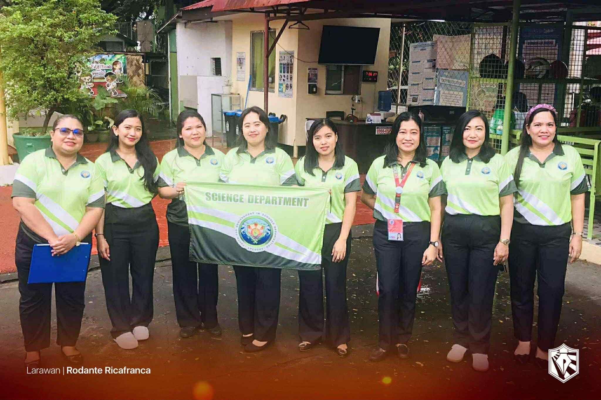Ap month:
The most important thing i learned during the Ap month is to appreacite other nation's belief and appreciate their culture and the way they dress. I can apply what I learned by respecting the other nation's culture and not being racist. I participated actively because I wore a cultural attire to school and also did the ap quiz bee elimination with my classmates. I would explain this event as something that made me amazed because I was able to see other's culture through the exhibit and the pageant where students wear cultural attires. This event is important because, it makes us knowledgable with other nations through creativity and students also showed their talents.
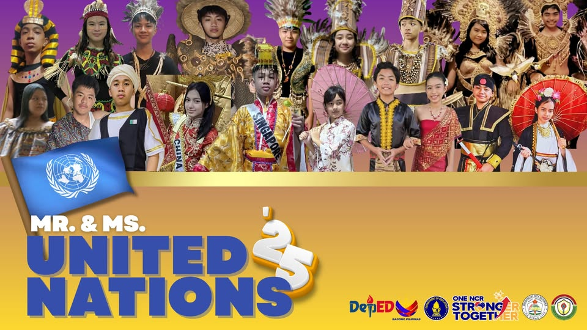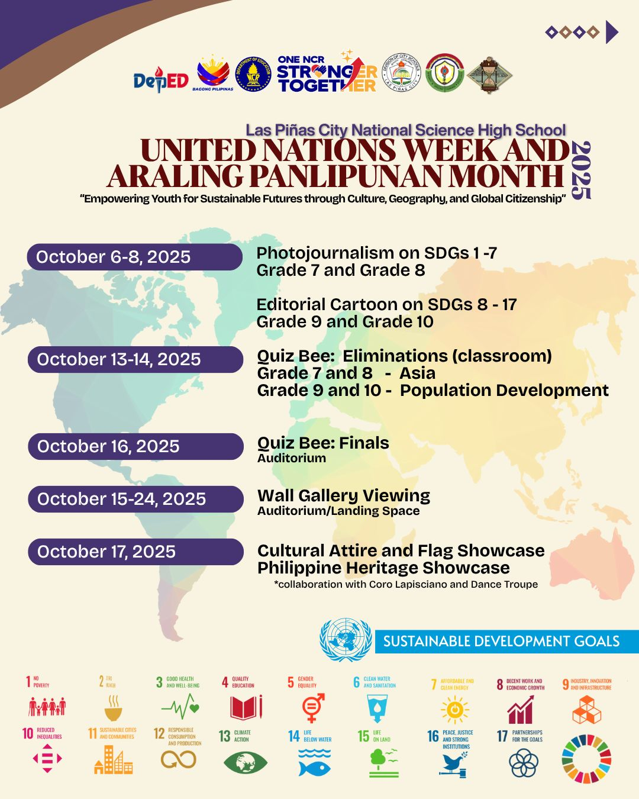Teacher's day:
The most important thing I learned during the teacher's dsy is that we must appreciate our teacher's hardwork to teach us students. I can apply what I learned by passing my schoolworks on time, respecting teachers and staff, and by participating in class. I participated actively because I joined every game the class officers prepared and also sang with them as the song plays. I would explain this event as something that is very special to me, because I get to see my teacher's hardwork and not just mine. Its important to have this event because it teaches us to love and appreciate our teachers, and that they also see our struggles.
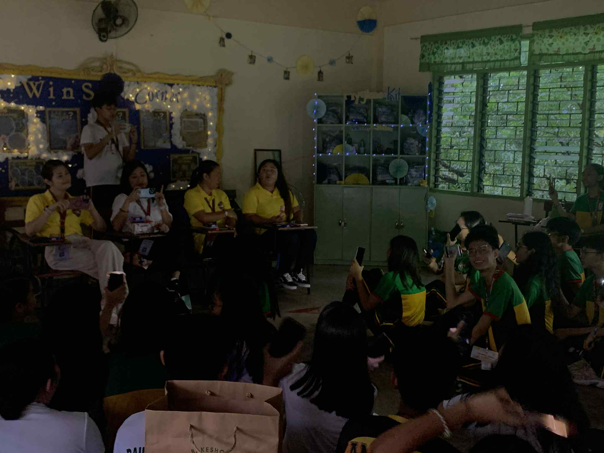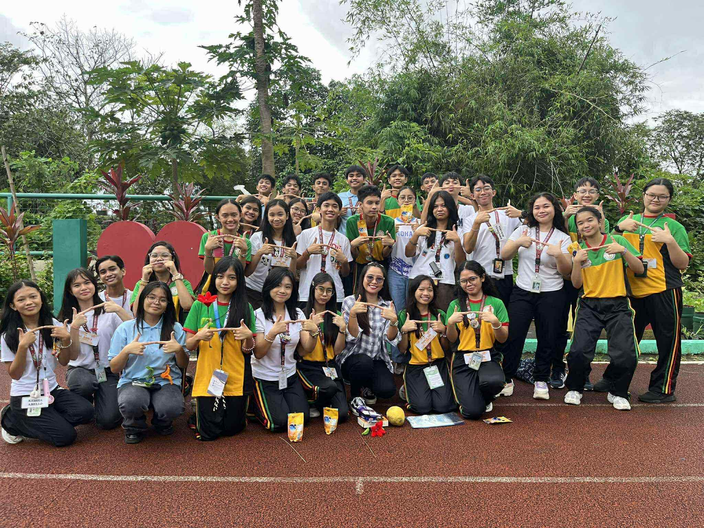